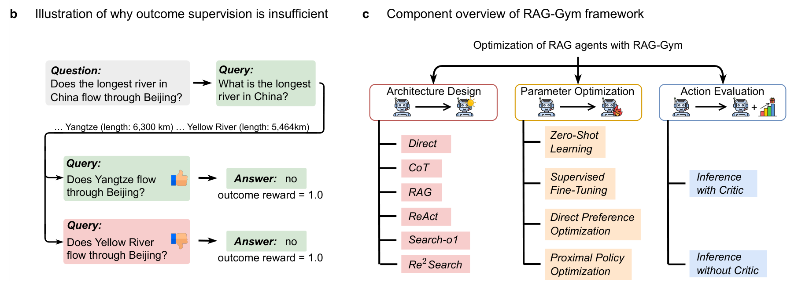
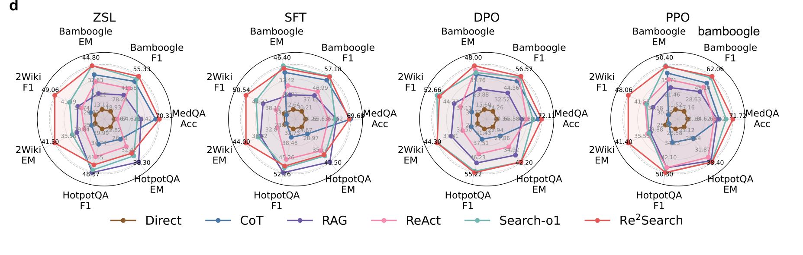
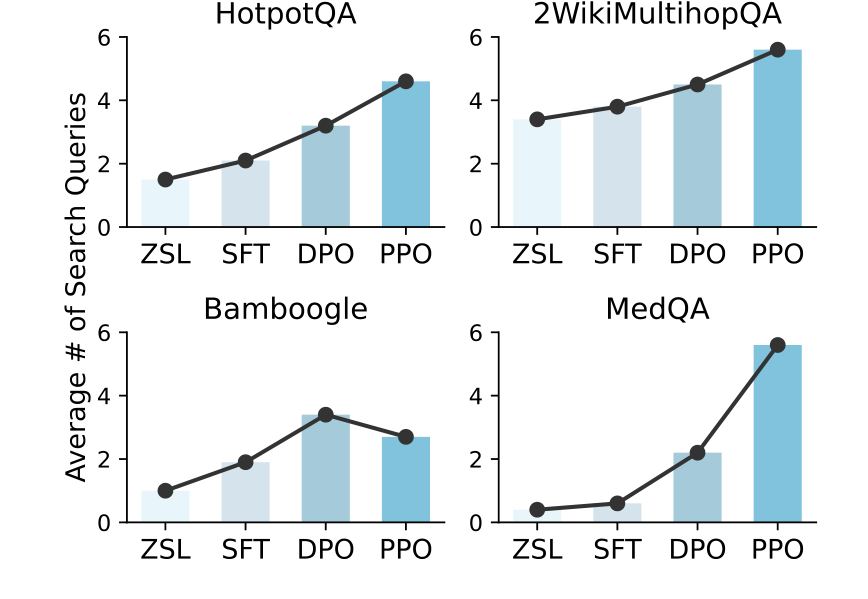
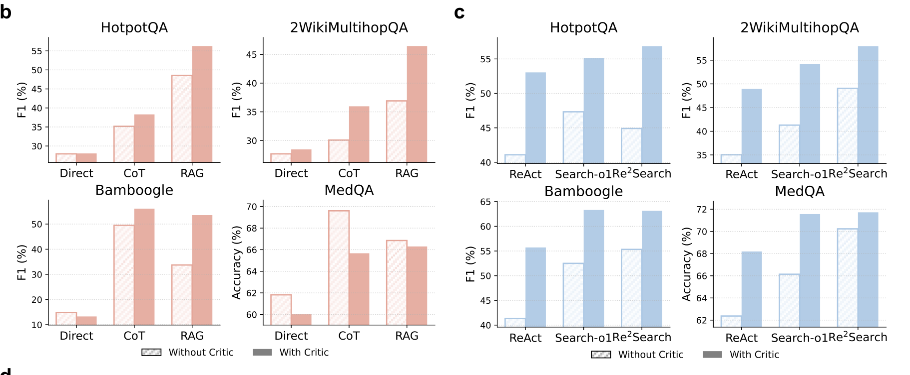
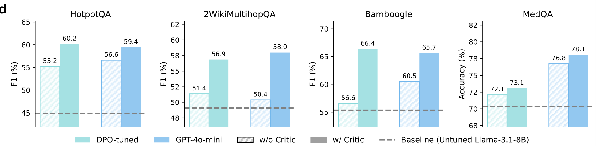
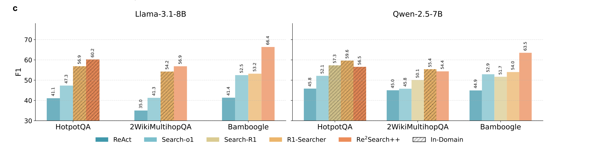
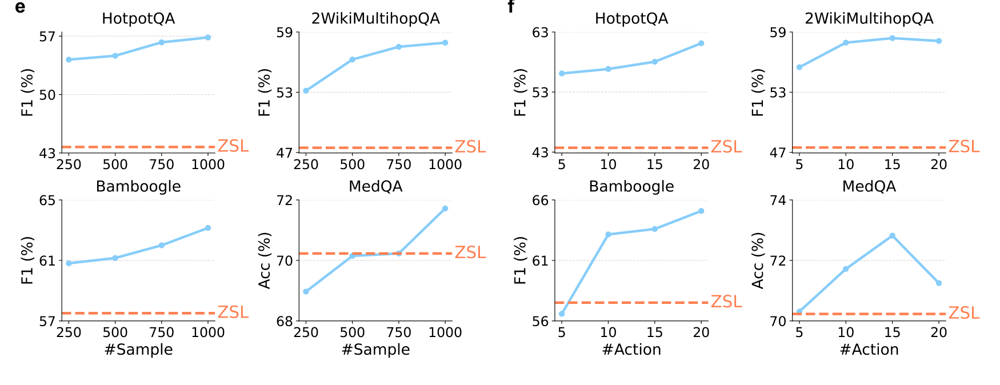

AI for Evidence Utilization · Summarize
Supervising the search process produces reliable and generalizable information-seeking agents
Guangzhi Xiong*, Qiao Jin*, Xiao Wang, Yin Fang, Haolin Liu, Yifan Yang, Fangyuan Chen, Zhixing Song, Dengyu Wang, Minjia Zhang, Zhiyong Lu, Aidong Zhang
* equal contribution
Nature Communications 2026
These slides were generated with the help of AI and may contain errors.
01Motivation
Outcome-only rewards produce unreliable information-seeking agents
- LLMs now act as autonomous agents that iteratively search external knowledge.
- High-quality intermediate search steps are hard to generate and harder to supervise.
- Rewarding only the final answer invites reward hacking and over-reliance on parametric memory.
- A correct answer can hide a flawed search path — and that path generalizes poorly out of domain.
02Workflow & results
RAG-Gym improves search along three axes
HotpotQA F1 (%)Llama-3.1-8B-Instruct
03Method
RAG-Gym supervises the search process rather than the final answer alone
- A wrong intermediate query can still yield the right answer, so outcome reward marks it correct.
- RAG-Gym optimizes three axes: architecture design, parameter tuning, and action evaluation.

04Result
Reasoning reflection is the capability search agents most often lack
- Sweeping architectures and tuning methods isolates which agent capabilities actually matter.
- Re2Search is the only design carrying the full capability stack, and it leads on every axis of the radar.

05Result
Process supervision increases the number of search queries agents issue
- Agents trained with process rewards issue more search queries before committing to an answer.
- The shift is consistent across HotpotQA, 2WikiMultihopQA, Bamboogle and MedQA.

06Result
Critic guidance benefits multi-step search agents
- A process-reward critic can improve search without retraining the actor.
- Benefits are clearest for multi-step agents; single-step methods can show little benefit or decline.

07Result
The critic transfers across model backbones, including proprietary actors
- A Llama-3.1-8B critic improves a proprietary GPT-4o-mini actor — 2WikiMultihopQA rises from 50.4 to 58.0.
- Bamboogle gains most, from 56.6 to 66.4 F1 on the tuned backbone.

08Result
Re2Search++ generalises to out-of-domain benchmarks
- Re2Search++ performs best on Bamboogle with both Llama-3.1-8B and Qwen-2.5-7B.
- Bamboogle is an out-of-domain benchmark; Re2Search++ was tuned on HotpotQA.

09Result
Performance can improve with more training data and candidate actions
- Training-data gains vary across datasets; MedQA shows a U-shaped trend.
- Sampling more candidate actions helps until gains saturate; larger pools can reduce performance.

10Summary
RAG-Gym at a glance
| Background | Agentic RAG interleaves search and reasoning to answer hard questions. |
| Problem | Outcome-only rewards cause reward hacking and poor out-of-domain search. |
| Approach | Architecture design, process-supervised training, and critic-guided action selection. |
| Results | Re2Search++ beats outcome-supervised baselines; critics transfer to proprietary LLMs. |
| Conclusion | A principled blueprint for training reliable, generalizable search agents. |